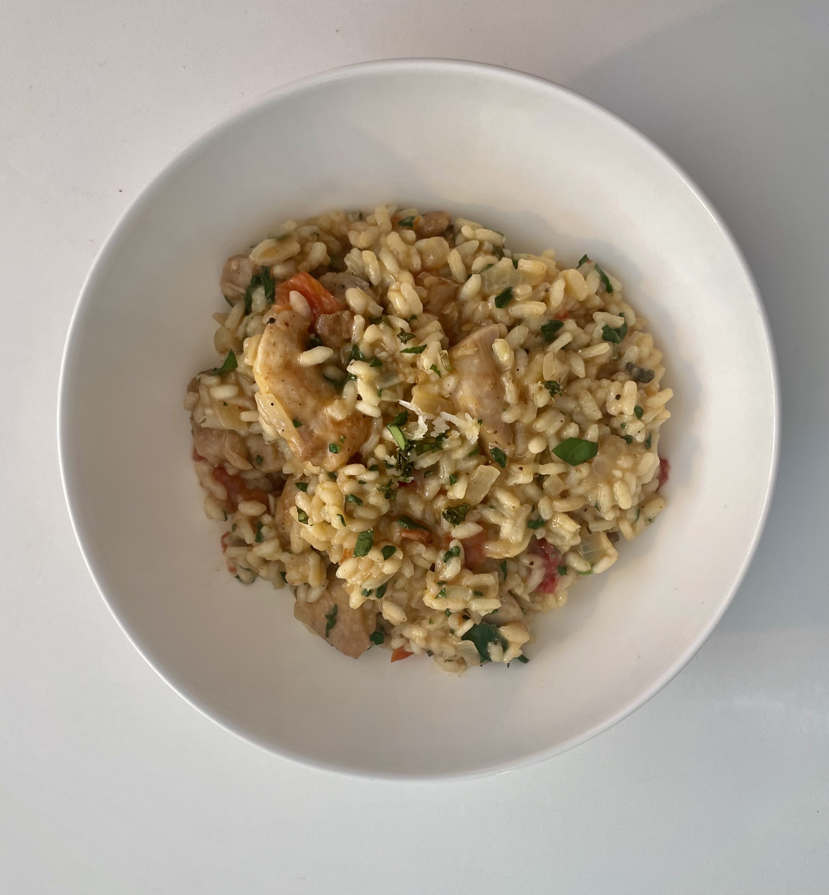

Creamy risotto with golden chicken, sweet-tangy sundried tomato, garlic and wilted spinach, finished with butter, parmesan and lemon.
This one is comforting but still fresh from the lemon and greens. Great for feeding a crowd and perfect for leftovers.

6 servings
45–50 mins • High Protein • Base: 6 servings